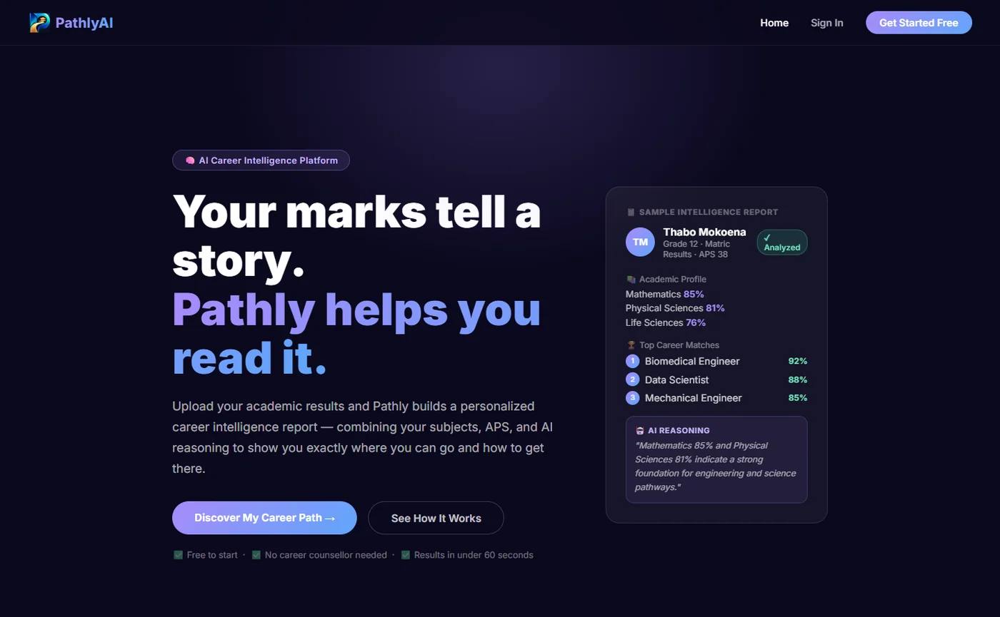

Live product
Angular 21 · .NET 10
Career intelligence · 2026
PathlyAI
Your marks tell a story. Pathly reads it.
Learners upload a matric report — a PDF or a phone photo — and Pathly turns it into a career report they can act on. It extracts subjects and marks, calculates APS, matches the profile to career paths, and explains the reasoning in plain language. A psychometric layer adds interests and working style; the combined report shows what fits and what to do next.
Role Full-stack — .NET API, Angular client, document pipeline, billing
- Document pipeline. PDF text extraction plus Tesseract OCR for photos, a quality gate that rejects unreadable scans, and LLM structuring with validation before anything is stored.
- Academic engine. APS calculation, subject canonicalisation, qualification gating, progression and academic prediction behind a 12-project Clean Architecture solution.
- Psychometrics + billing. Answer fingerprinting and profile de-duplication; free/premium entitlements, monthly metering, Paystack checkout and signed webhook verification.
- Product surface. Angular 21 client with route guards, JWT interceptor, idle handling, SSR build, and a report flow that works on a phone.
Angular 21→ASP.NET Core 10→Groq + OCR→SQL Server
- C#
- .NET 10
- Angular
- TypeScript
- EF Core
- SQL Server
- Groq
- Tesseract
- Paystack
- JWT
25 endpoints · 15 routes · 13 test suites